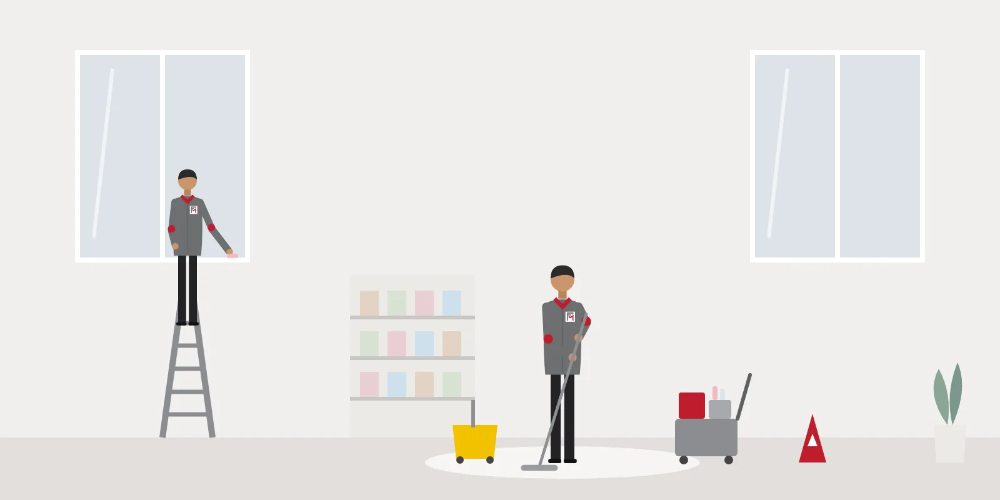

Commercial & Residential Cleaning
Deep Cleaning Services in Doha for Homes, Offices and New Fit-Outs

JAFM Qatar has provided deep cleaning services in Doha for homes and businesses since 1977. A deep clean goes well beyond the weekly routine. It reaches the dust, grease and build-up that normal cleaning leaves behind, so the space feels fresh, looks cared for and is healthier to use.
Why deep cleaning matters in Qatar
Life in Qatar is hard on buildings. Fine sand gets in through doors, windows and AC vents, even when everything is closed. Air conditioning runs for most of the year, which moves dust around and leaves it on grilles, ceilings and soft furnishings. Kitchens and bathrooms face heat and humidity that help grease, limescale and mould take hold.
A regular clean keeps things tidy on the surface. A deep clean deals with what sits underneath. Many people in Doha book one:
- Before moving into a new villa or apartment
- When handing a property back at the end of a lease
- After fit-out or renovation works
- Before a busy season, an inspection or a big event
- Once or twice a year to reset an office or home
What our deep cleaning includes
Every property is different, so the scope is agreed after the site visit. A typical deep clean covers:
- Kitchens: degreasing hobs, hoods, tiles and splashbacks; cleaning inside and outside cupboards and appliances where agreed
- Bathrooms: removing limescale and soap scum, cleaning grout, taps, showers, toilets and drains
- Floors: machine scrubbing of tiles and hard floors, vacuuming carpets and treating marks
- Windows and glass: inside glass, frames, tracks and sills
- High-level areas: ceiling corners, light fittings, AC grilles and vents
- Furniture and fixtures: wiping doors, handles, switches, skirting boards and wardrobes
- Offices: desks, meeting rooms, pantries, washrooms and reception areas
Move-in, move-out and after fit-out cleaning
Move-in cleaning gets a home ready before your furniture arrives. Empty rooms are the easiest time to clean every cupboard, shelf and corner.
Move-out cleaning helps you hand a property back in good condition. Landlords in Doha often check kitchens, bathrooms, walls and floors closely before returning a deposit.
After fit-out cleaning removes the fine dust, paint spots, adhesive and packaging left by contractors. This kind of dust settles again for days, so the work is planned in stages to get a proper finish before the space is used.
How it works, step by step
- Request a quote through the form on jafmqatar.com or call +974 4444 1416.
- Free site visit. We look at the property, note problem areas and agree what you need.
- Written quote. You receive a clear scope and price in writing.
- Scheduling. We agree a date and time that suits you, including weekends where possible.
- The deep clean. The team works room by room to the agreed checklist.
- Walk-through. You check the work with us before we close the job.
Buildings we serve
We carry out deep cleaning across Doha and other parts of Qatar for:
- Villas and compounds
- Apartments and residential towers
- Offices and business centres
- Shops and showrooms
- Schools and training centres
- New buildings after construction or fit-out
Areas we serve: all of Qatar
We carry out deep cleaning anywhere in Doha and Qatar, including West Bay, Al Sadd, Msheireb, Lusail, The Pearl, Al Wakrah, Al Khor and the Industrial Area. If your building is in another area, we cover it too.
Frequently asked questions
How much does deep cleaning cost in Doha?
It depends on the size of the property, its condition and what needs to be covered. We offer a free site visit and then send you a written quote, so you know the cost before any work starts.
How long does a deep clean take?
A small apartment can often be done in one day. Larger villas, offices and after fit-out jobs may take longer. We give you an expected timeframe in the quote.
How often should I book a deep clean?
Many homes in Qatar book one or two a year, and more often if there is building work nearby or heavy dust. Offices often plan one each quarter or before busy periods.
Do I need to be at home during the clean?
Not for the whole time. Most clients are there at the start to give access and at the end for the walk-through.
Are the cleaning products safe for children and pets?
We use products suited to each surface and follow the instructions for use. If anyone in the home has allergies or sensitivities, tell us at the site visit and we will plan around it.
Book your deep clean in Doha
JAFM Qatar is ISO 9001, ISO 14001 and ISO 45001 certified by TNV, with an office at Office 504B, 5th Floor, Al Bustaan Center, Al Sadd, Doha. If your home or office needs more than a regular clean, request a quote through the form on jafmqatar.com or call +974 4444 1416. We will arrange a free site visit and send you a written quote.